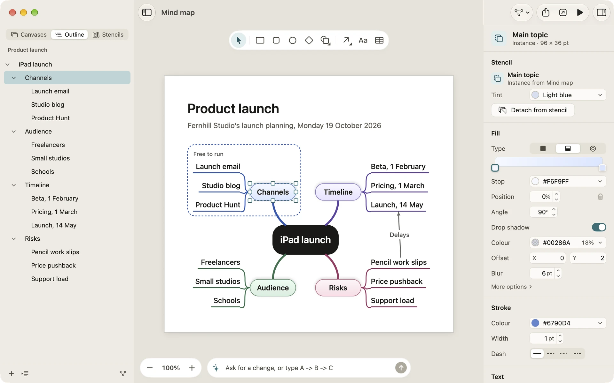
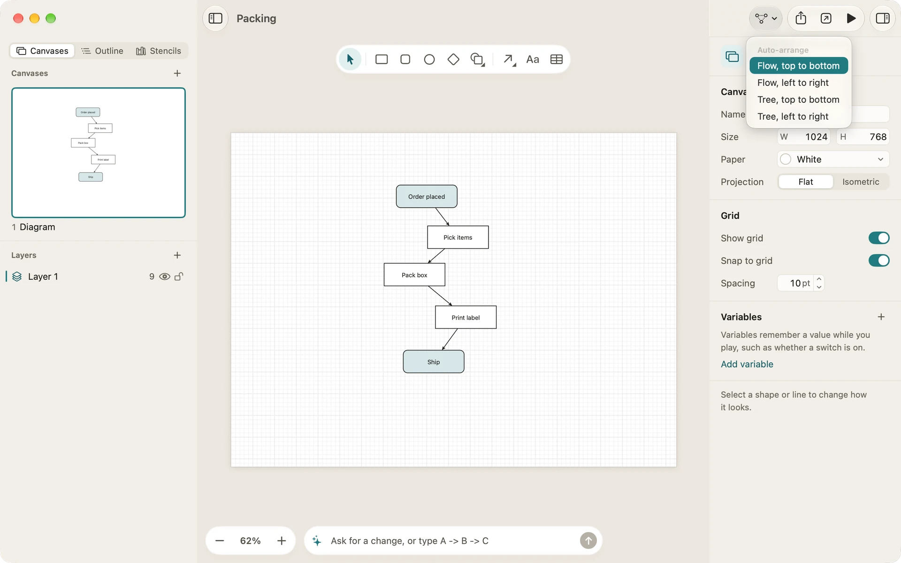

Outline and auto-layout
Some diagrams are easier to write than to draw: a mind map, an org chart, a plan broken into steps. The Outline lets you build and edit them as a list, and auto-layout puts the shapes in order for you, whether you started from the Outline, the prompt bar or a drawing of your own.
The Outline tab
Open the sidebar’s Outline tab. It shows the current canvas, under its name, as a tree of topics:
- Each topic is a shape, named by its words, or by what it is when it has none.
- A line from one shape to another makes the second a topic under the first.
- A shape nothing leads to is a topic at the top of the tree.
The Outline is the diagram seen another way, not a copy of it. Select a topic and its shape is selected on the canvas; change the Outline and the canvas changes with it. A canvas with no shapes says “No topics yet” and offers Add a topic.
On the Mac, the arrow keys move through the topics and the disclosure triangles show or hide the topics under one. On iPad each topic is a full-height row, with its disclosure at the trailing edge.

Adding topics
The buttons at the foot of the Outline add topics:
- + adds a topic next to the selected one, under the same parent. With nothing selected it adds a topic at the top of the tree, placed clear of what’s already on the canvas.
- The second button, shown while a topic is selected, adds a topic under it.
A new topic is a shape styled like its parent, joined to it by a line that looks like the parent’s other lines. You can type its words straight away. Adding a topic under another lays out that tree again, keeping its first topic where it was.
A topic’s context menu has the same commands: Add a topic under it and Add a topic next to it, then Delete.
Renaming and deleting
To rename a topic, select it and press Return, double-click it, or choose Rename from its context menu. Renaming a topic changes its shape’s words on the canvas.
Delete removes the topic’s shape and every line into or out of it. Every change in the Outline is one step you can undo.
Auto-layout
Auto-layout arranges a canvas’s connected shapes for you, keeping the shapes, their words and their connections. It comes in two styles:
- Flow lays a diagram out in layers along the way its lines run, which suits flowcharts, pipelines and anything with steps.
- Tree lays it out as a tree, each shape under the one its line comes from, which suits mind maps, org charts and sitemaps.
Each runs top to bottom or left to right.
The Arrange menu and the toolbar
Choose Arrange › Auto-arrange for the four layouts:
- Flow, top to bottom (Shift-Command-L)
- Flow, left to right
- Tree, top to bottom
- Tree, left to right
The toolbar’s Arrange button offers the same list, on the Mac and the iPad. With two or more graphics selected, it arranges the selection; otherwise it arranges every connected shape on the canvas.
The rest of the Arrange menu works on the selection: Group and Ungroup, Save as stencil…, the stacking order (Bring to front, Bring forward, Send backward, Send to back), the flips and masks, Align and Distribute, and on an isometric canvas, Plane.

Tidy
Tidy is auto-layout put to a quick job: putting a messy diagram back in order.
- In the Outline, the Tidy menu at the foot of the tab lays the canvas out as trees, top to bottom or left to right.
- In the prompt bar, type “tidy up the whole diagram”, or select some shapes and type “tidy up what’s selected”. Without a direction, it keeps the way the diagram’s lines mostly run.
- On the Mac, View › Customize Toolbar… can add a Tidy button, which tidies the diagram in the direction it flows. The iPad toolbar can add it too.
Tidy and auto-layout move a locked shape that is part of the diagram, as they lay out every connected shape. Undo puts everything back as one step.
On an isometric canvas
On an isometric canvas, auto-layout lays the shapes out on the floor grid, then draws them in projection, so a flowchart on the floor stays a flowchart. See Isometric canvases.
Related
- Drawing: lines, magnets and connections.
- The prompt bar: draw a diagram from a list of steps, already laid out.